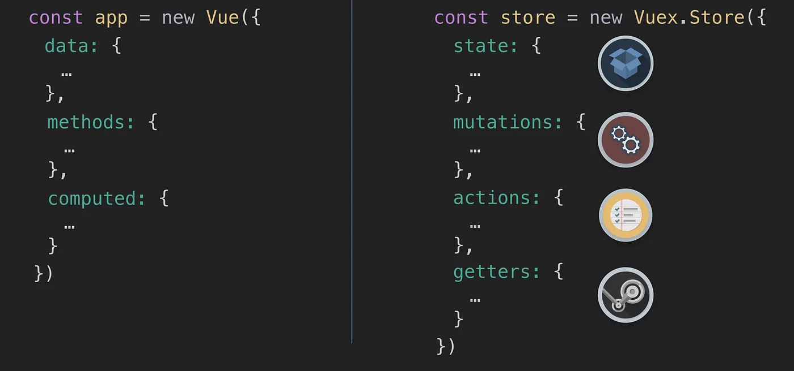

Intro Vuex
VUEX
Vuex és una biblioteca de gestió de l'estat per a aplicacions Vue.js. És una solució oficial per gestionar de manera centralitzada l'estat de l'aplicació, especialment útil quan tens una aplicació complexa amb diversos components que necessiten compartir i modificar l'estat global.
Què és l'estat en Vue.js?
En el context de Vue.js, l'estat fa referència a la informació o dades que poden ser compartides entre diferents components de l'aplicació. Per exemple, en una aplicació d'una llista de tasques, l'estat podria contenir les tasques actuals de l'usuari.
Estat
En aplicacions petites, pots gestionar l'estat localment a cada component. Però, quan tens una aplicació més gran, amb molts components que necessiten accedir a les mateixes dades (com l'usuari autenticat, o el comptador de tasques), pot resultar difícil mantenir l'ordre i evitar inconsistències en l'estat.
Aquí és on entra Vuex.
Per què utilitzar Vuex?
Vuex ofereix una forma centralitzada i escalable de gestionar l'estat. Permet que totes les dades importants de l'aplicació estiguin disponibles en un sol lloc, i que els components interactuïn amb elles de manera més previsible i controlada. Les principals raons per utilitzar Vuex són:
- Centralització de l'estat: Tot l'estat de l'aplicació es troba en un sol lloc (el "store").
- Previsibilitat: Cada modificació de l'estat passa per un procés controlat de "mutacions", el que facilita el seguiment i la depuració.
- Escalabilitat: És més fàcil gestionar l'estat a mesura que l'aplicació creix i molts components necessiten compartir dades.
- Manteniment: Manté el codi organitzat i més fàcil de gestionar, especialment quan tens un equip treballant en un projecte gran.
Com funciona Vuex?
Vuex utilitza el patró de disseny Flux (o Redux), que separa la gestió de l'estat en diverses seccions clau:
- State (Estat): Conté totes les dades de l'aplicació. És l'equivalent a un "model" en altres frameworks.
- Mutations (Mutacions): Les mutacions són les úniques funcions que poden modificar l'estat en Vuex. Són funcions sincròniques que modifiquen directament l'estat.
- Actions (Accions): Les accions poden contenir lògica asíncrona (per exemple, crides a una API) i poden cridar mutacions per modificar l'estat després de completar la tasca.
- Getters (Obtenidors): Els getters permeten obtenir l'estat i fer operacions sobre ell abans d'assignar-lo als components. És com un "mètode de lectura" de l'estat.
- Modules (Mòduls): Si l'estat de l'aplicació creix massa, es pot dividir en mòduls. Cada mòdul té el seu propi estat, mutacions, accions i getters, permetent una millor organització i escalabilitat.
Estructura bàsica de Vuex
Un store bàsic de Vuex té la següent estructura:

Components de Vuex
1. State:
Conté totes les dades importants de l'aplicació. És un objecte amb propietats que representen l'estat.
2. Mutations:
Són les funcions que modifiquen l'estat. Només les mutacions poden canviar l'estat, i aquestes han de ser funcions sincròniques.
| JavaScript | |
|---|---|
3. Actions:
Les accions són funcions que poden contenir lògica asíncrona, com per exemple fer una crida a una API. Les accions no poden modificar l'estat directament, però poden cridar a les mutacions per modificar l'estat.
| JavaScript | |
|---|---|
4. Getters:
Els getters són com les "funcions de lectura" de l'estat. Permeten calcular o transformar l'estat abans de mostrar-lo als components.
| JavaScript | |
|---|---|
5. Modules:
Els mòduls permeten organitzar el store en parts més petites, cadascuna amb el seu propi estat, mutacions, accions i getters. Això és útil per a aplicacions grans.
| JavaScript | |
|---|---|
Exemple d'ús en un component:
Un cop tens Vuex configurat, pots interactuar amb l'estat des dels teus components de la següent manera:
En aquest exemple:
this.$store.getters.countaccedeix al valor del comptador a través de Vuex.this.$store.commit('increment')crida a la mutacióincrementper modificar l'estat.
Beneficis de Vuex:
- Previsibilitat: Tots els canvis de l'estat passen per un procés ben definit de mutacions i accions.
- Centralització: Tens totes les dades de l'aplicació gestionades en un sol lloc, facilitant l'organització.
- Escalabilitat: Facilita l'escalabilitat a mesura que l'aplicació creix, permetent dividir el codi en mòduls.
Quan utilitzar Vuex:
Vuex és útil quan tens una aplicació més gran on múltiples components necessiten accedir a les mateixes dades i hi ha necessitat de controlar de manera clara els canvis de l'estat. Per a aplicacions petites o components aïllats, potser no sigui necessari.